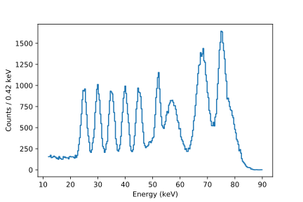
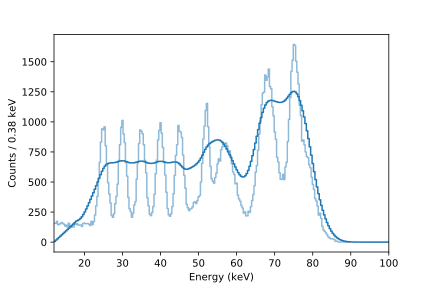
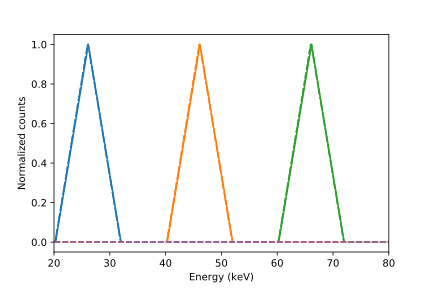
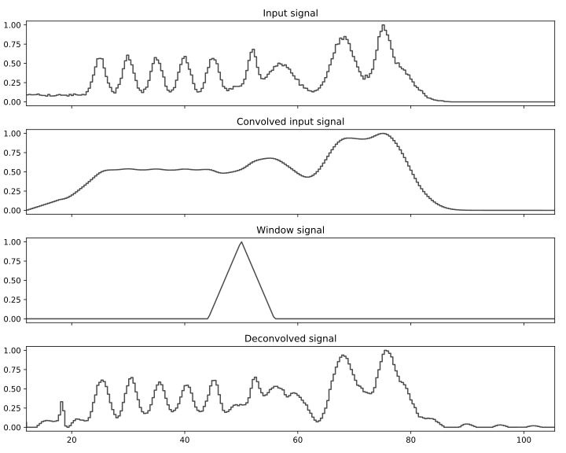
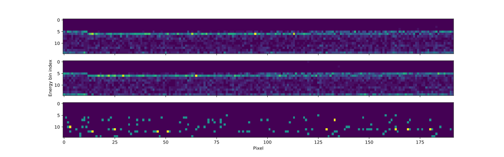
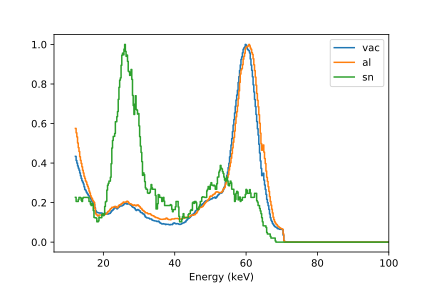
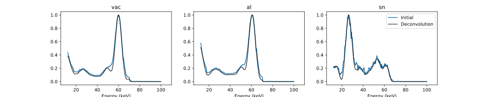
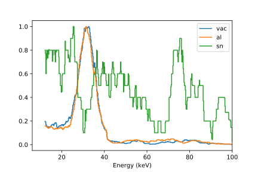
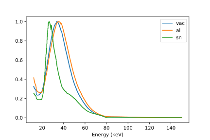
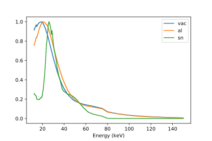

class: center, middle, inverse # DosiMode Energy Spectrum ### 9th September 2018 ### Updated on 6th March 2019 --- ## Bin Edge Shift - Measured ToT values are counted in 16 bins with user specified edges - Usually, pixels are given same edges after energy calibration - Idea: Set edges randomly for each pixel and gain - robustness against energy calibration uncertainties - improved energy spectral information of irradiated photons - But: did not work properly - Instead, use uniform bins per pixel but shift consecutive pixels - ToT vs. binned ToT: reading ToT only shows last recorded entry, while in binning mode each event is registered `\(\rightarrow\)` Either high statistics or high precision but not both <p style="text-align:center;"></p> --- ## Energy Spectrum Example - Generate exemplary energy spectrum - Set random, uniform bin edges in range 12 - 100 keV. The smaller the range the higher the precision later - Every pixel detects this spectrum with Poissonian uncertainty for each bin <p style="text-align:center;"></p> --- ## Energy Histogram Combination - Simulate behavior of binning state machine by histogramming data of each pixel with the specified bin edges - Combine single pixel histograms to a combined one with 16 x 192 edges (only using large pixels atm) - Here, for two histograms, overlapping bins are split and entries are distributed accordingly to new bins <p style="text-align:center;"></p> --- ## Energy Histogram Combination - Previously generated spectrum is histogrammed for each pixel - Neglect things like discrete ToT values, temperature problems, or uncertainties of energy calibration This is the result the detector will yield `\(\rightarrow\)` Convolved energy spectrum <p style="text-align:center;"></p> --- ## Convolution Window Estimation - Energy spectrum is convolved with certain window due to combination of bin edges - To yield window shape, create perfect, mono-energetic energy spectrum and perform histogram combination - Shift energy of spectrum and apply fit to window function to get mean value of `\(\tau\)` $$ w(E) = A \cdot \left(1 - \frac{|x - \mu|}{\tau}\right) $$ <p style="text-align:center;"></p> --- ## Wiener Deconvolution - In theory, deconvolution is a division in the frequency domain, i.e. if `\(\hat h = \hat f \hat g\)` it follows that `\(\hat g = \frac{\hat h}{\hat f}\)` - But, `\(\hat f \neq 0\)` has to be satisfied which is not possible - Avoid division by 0 via regularization (e.g. Tikhonov) or a Wiener filter - Wiener-filter reduces frequencies according to their SNR which is set via a constant $$ \mathcal R\left(\mathrm{IFT}\left(\frac{ \hat f \cdot \overline{\hat h} }{\hat h \overline{\hat h} + \lambda^2}\right)\right) $$ --- ## Deconvolution Results Result depends on chosen bin width of rebinning process `\(\rightarrow\)` Bin width too small: loss of information `\(\rightarrow\)` Bin width too large: noisy data which is amplified in deconvolution <p style="text-align:center;"></p> --- ## Am241 Measurement - Measurement with shifted bin edges - Distribution of events per pixel for all three slots (caps installed) <p style="text-align:center;"></p> --- ## Am241 Measurement Combination - Combination of histograms for each detector - vac and al look very similar, sn sees mostly Sn fluourescences and back-scattering (Compton-edge) <p style="text-align:center;"></p> --- ## Am241 Measurement Deconvolution - Compton-edge clearly visible now - Statistics of sn-detector very low. Here, deconvolution leads to smoothing only <p style="text-align:center;"></p> --- ## Ba133 Measurement Same measurement, but now for only two minutes using a weak Ba133 source `\(\rightarrow\)` Doesn't look like much <p style="text-align:center;"><img src="images/data_distribution_Ba.svg" alt="data_distribution_Ba" width="1000px" align="middle"/></p> --- ## Ba133 Measurement Combination - vac and al-spectra clearly show the fluorescence peak - statistics of sn-detector too low to yield representative data - Applying deconvolution now only leads to smoothening, since there are no peaks which can be separated `\(\rightarrow\)` using the bin edge combination method good spectra can be taken in short time. For the strong Am241 source, a single measured frame is enough! <p style="text-align:center;"></p> --- ## Energy Range Expansion - Want a high energy resolution but also a high range - Not possible, unless the whole energy range is split into smaller ranges - Only one sub-range is active at a time, therefore the remaining ones are dead `\(\rightarrow\)` Tradeoff is a higher needed exposure time --- ## Measurement of XRT spectra - Great method to measure spectra produced by an x-ray tube with high flux - Usually a spectrum can only be measured via ToT-mode, but in this mode only one event per frame per pixel is stored which leads to long exposure times - Measurement of 80 keV XRT with and without phantom (pile-up visible) <p style="text-align:center;">   </p>